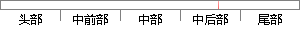

userId = request.
片段位置图

相似结果|
相似片段 1：)；u．setPhone(phone)；U．setRole(role)；u．setSex(sex)；u．setUserid(userid)；u．setAge(age)；US．add(u)；request．貉弦磁斓
相似片段 2： user_id = '"+ request. getParameter ("userid") +"'");bb.setSQL(sb.toString());Vector
|
※ 片段修改建议 ※
近似词参考：